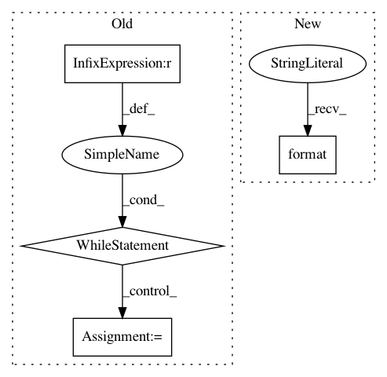

f96421e1547191aae9dfadca8d4c0d7573f6dec3,batch_exporter.py,,training_series,#Any#Any#Any#Any#,62
Before Change
def training_series(cursor_r, cursor_c, mix, increment_fraction=0.05):
Given two end-cursors and a mix of games, produce a series of bounds.
while (cursor_r - mix.games_r) >= 0 and (cursor_c - mix.games_c) >= 0:
yield (cursor_r - mix.games_r), cursor_r, (cursor_c - mix.games_c), cursor_c
cursor_r -= math.ceil(mix.games_r * increment_fraction)
cursor_c -= math.ceil(mix.games_c * increment_fraction)
def _export_training_set(args):
spec, start_r, start_c, mix, batch_size, output_url = args
gq_r = bigtable_input.GameQueue(spec.project, spec.instance, spec.table)
gq_c = bigtable_input.GameQueue(spec.project, spec.instance, spec.table + "-nr")
After Change
// number of intervals
stride_c = math.ceil(cursor_c / intervals)
print("stride_c was {}, now {}".format(mix.games_c * increment_fraction, stride_c))
print("stride_r: {} stride_c: {}".format(stride_r, stride_c))
for b_r, b_c in zip(range(0, cursor_r, stride_r), range(0, cursor_c, stride_c)):
last_r, last_c = b_r + stride_r, b_c + stride_c
yield (b_r, last_r, b_c, last_c)
In pattern: SUPERPATTERN
Frequency: 3
Non-data size: 4
Instances
Project Name: tensorflow/minigo
Commit Name: f96421e1547191aae9dfadca8d4c0d7573f6dec3
Time: 2019-04-29
Author: dtj@google.com
File Name: batch_exporter.py
Class Name:
Method Name: training_series
Project Name: pyprob/pyprob
Commit Name: 608cb465ced16fea322e9981651fbf32a29d60fd
Time: 2017-11-30
Author: atilimgunes.baydin@gmail.com
File Name: pyprob/state.py
Class Name:
Method Name: extract_address
Project Name: GoogleCloudPlatform/python-docs-samples
Commit Name: 7029fcc6ff92856d43119a56b9d3367ae0fd7b55
Time: 2020-04-21
Author: tmatsuo@google.com
File Name: container_registry/container_analysis/samples_test.py
Class Name: TestContainerAnalysisSamples
Method Name: test_pubsub